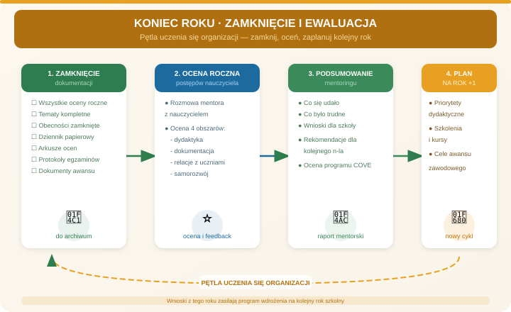

Zadania mentora
- Sprawdzić komplet ocen rocznych, tematów i obecności.
- Omówić sprawozdanie ze stażu, jeżeli dotyczy.
- Podsumować rozmowy mentorskie i najważniejsze ustalenia.
- Zebrać rekomendacje do kolejnej edycji programu.
Etap R
Cel: zamknąć dokumentację, podsumować proces wdrożenia i przygotować decyzje rozwojowe na kolejny rok.

Wpisz: podsumowanie roku, listę zamkniętych dokumentów, rekomendacje dla programu i cele rozwojowe nauczyciela.
Rozmowa końcowa powinna nazwać trzy sukcesy, najtrudniejsze sytuacje, wnioski z roku, mocne strony nauczyciela i cele na drugi rok pracy.
Dyrekcja/koordynator zbiera wnioski od mentora i nauczyciela: co działało, czego brakowało, które procedury trzeba doprecyzować i jakie materiały zaktualizować.